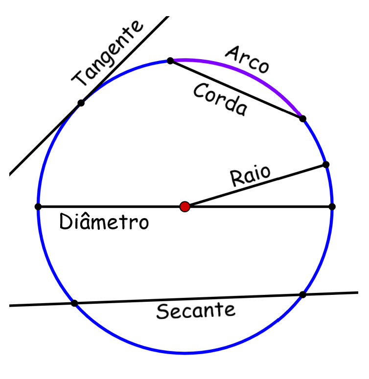

Circunferência é uma figura geométrica de formato circular, na qual todos os seus pontos encontram-se a mesma distância de seu centro
Partes de uma circunferência:
Raio: reta que liga o centro da circunferência a qualquer ponto de sua extremidade.
Diâmetro: reta que passa exatamente pelo centro da circunferência.
Arco: parte de uma circunferência entre dois pontos.
Corda: reta que liga dois pontos de uma circunferência sem passar pelo centro
Tangente: reta que possui um ponto comum a circunferência.
Secante: reta que possui dois pontos comuns a circunferência
Reta externa: possui nenhum ponto em comum a circunferência
É necessário que a medida do raio e as coordenadas do centro da circunferência sejam conhecidas, pois a fórmula da equação reduzida da circunferência é
(x – a)² + (y – b)² = r²
sendo (a, b) a coordenada do centro da circunferência e r é o comprimento do seu raio.A equação geral é dada a partir do desenvolvimento da equação reduzida:
(x – a)² + (y – b)² = r²
(x² – 2xa + a²) + (y² – 2yb + y²c ) = r²
x² + y² – 2xa – 2yb y + a² + b² – r² = 0